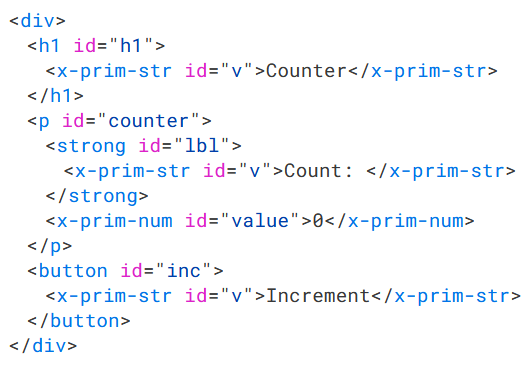
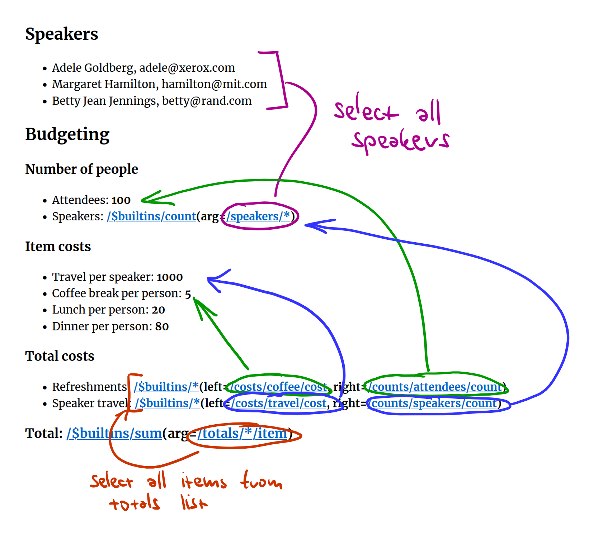

Writing Tiny Programming
Systems in F#
Tomas Petricek, Charles University, Prague

Demo
Not what you'd expect
at the Lambda meetup
History of programming
What we see depends on how we look

Programming Languages
Programming is
writing code
Formal semantics, implementation, paradigms, types
We know how
to study this!

Programming Systems
Interacting with a stateful system
Feedback, liveness, interactive user interfaces
But how do we
study this?
Technical dimensions

Capture system properties
- Look at past systems afresh
- Allow comparison of systems
- Stand on the shoulders of giants!
What is a technical dimension
- Self-sustainability
- Modes of interaction
- Conceptual structure

Technical dimensions catalogue
Analysis of
LISP machines,
UNIX, Hypercard, Spreadsheets,
Haskell, Web, etc.
Demo
Another thing you'd expect
at the Lambda meetup

Why is BASIC cool
Factoring complexity
Simple with escape hatches for experts
Modes of interaction Interactive editor that's also an interpreter
Learnability
Magazines and games
Complementary science
Recreating BASIC in F#
type Expression =
| Variable of string
| Const of Value
| Binary of Op * Expr * Expr
| Func of string * Expr list
type Command =
// Program commands
| Print of Expr * bool
| Goto of int
| Poke of Expr * Expr
| Assign of string * Expr
| If of Expr * Command
| Get of string
// Editor and interactive
| List of int option * int option
| Delete of int option * int option
| Run
Algebraic data types for the win!
Simple model to understand what
is going on
Everything else
built around this
Parse input
Evaluate command
/// Succeeds if the string 's'
/// starts with the prefix 'p'
let (|Prefix|_|) p s =
if s.StartsWith p then
Some(s.[p.Length..].Trim())
else None
/// Succeeds if the string 's'
/// starts with a number; returns
/// the number & the remainder
let (|Number|_|) s =
(...)
/// Parse command like '10 GOTO 20'
match input with
| Number(line, Prefix "GOTO" (Number(target, _))) ->
Active patterns
Adding super-powers to pattern matching!
Quick and dirty parsing, but great for demos...
Demo
Reconstructing BASIC in F#
Programming systems
Learning from the past
Demo
Programming by demonstration
Programming experiences
-
Collaborative programming
Resolve (some) merge conflicts -
Programming by demonstration
Turn interactions into programs -
Schema change control
Adapt program when data schema changes -
Incremental recomputation
Invalidate only what is necessary
Two ideas
Document
Contains code & data
Easy to navigate
Keeps evaluation trace

Edits
Replay gives document
Easier to merge
Capture edits as action

Demo: Conference planning

Demo
Add speaker & refactor list

Sample edits
Shared baseline with multiple sequences of edits added
Typical local-first workflow, with independent edits

Two ways
of merging
Do they result
in equivalent
documents?
Formulas
Code as document elements
- Store formulas as trees (AST) in document
- Render in a (somewhat) nicer way
- Evaluation adds edits to the log!
- Beware interactions with edit merging

Code is data
Absolute selectors only for now
A selector
is a sequence of:
- Field name
- Index specifier
- All selector
Demo
Budget calculation & refactor list
Evaluation
How it interacts with editing
- Evaluation just adds edits!
- Same edit merging as before
- Conflicting edits remove evaluated edits
- Incremental recomputation "for free"
Demo
Adding a speaker and evaluation
Denicek
Writing document-based system in F#
// Specify path(s) in a document
type Selector =
| All
| Index of string
| Field of string
| DotDot
// Two kinds of references
type RefKind =
| Absolute
| Relative
// Represents document structure
type Node =
| Primitive of Primitive
| Record of string * OrdList<string, Node>
| List of string * OrdList<string, Node>
| Reference of RefKind * Selector list
Modelling documents
Algebraic data
types again!
Homogeneous lists
Heterogeneous objects
Keeping nodes in the correct order is tricky...
Modelling edits
Actually, just algebraic data types again...
Great way to communicate with your customer
(or fellow academic)
Powerful functional patterns
Folding and transforming document nodes
val fold : (Node -> 'a -> 'a) -> 'a -> Node -> 'a
val replace : (Node -> Node option) -> Node -> Node
Replaying history to get a document
val apply : Node -> Edit -> Node
let doc = List.fold apply initial
Elm-based user-interface using Fable
val render : (Event -> unit) -> State -> Dom
val update : State -> Event -> State
let app = runApp initial render update
Teaching
Write your own tiny system(s)

Write your own tiny programming system(s)!
TinyML
TinyHM
TinyBASIC
TinyProlog
TinySelf
TinyExcel
type Expr =
// Lambda calculus
| Application of Expr * Expr
| Lambda of string * Expr
| Variable of string
// Numbers and functions
| Constant of int
| Binary of string * Expr * Expr
| Unary of string * Expr
// Data types
| Tuple of Expr * Expr
| TupleGet of bool * Expr
| Case of bool * Expr
| Match of Expr * string * Expr * Expr
// Programming
| Recursive of string * Expr * Expr
| Let of string * Expr * Expr
| If of Expr * Expr * Expr
Functional language
Evaluation turns
an Expr into value
Type inference infers
a Type for Expr
// Example terms
// * 'human(socrates)' is a
// predicate applied to atom
// * 'human(X)' is a predicate
// applied to variable
type Term =
| Atom of string
| Variable of string
| Predicate of string * Term list
// Clause with head and empty
// body represents a fact
type Clause =
{ Head : Term
Body : Term list }
Logic programming
Automatic resolution via unification
human(socrates).
mortal(X) :- human(X).
Unification of human(socrates) and human(X) produces
mapping X -> human
Conclusions
Tiny programming systems

PRG • PRG
More programming languages work happening in Prague!
MFF + FIT + you :-)
Research projects with funding for PhD students & post-docs...

‹Programming› 25
Programming research community meeting coming to Prague
18 paper talks
6 co-located workshops
Effekt tutorial
Writing tiny systems in F#
-
Programming systems are more than languages!
Interaction, live state, interfaces, new models -
Algebraic data types is all you ever need?
The most basic, but the most powerful feature!
Tomas Petricek, Charles University, Prague
References
Technical dimensions of programming systems https://tomasp.net/techdims/
The Lost Ways of Programming: Commodore 64 BASIC https://tomasp.net/commodore64/
Write your own tiny programming system(s)! https://d3s.mff.cuni.cz/teaching/nprg077/
‹Programming› 2025 https://2025.programming-conference.org/
PRG • PRG: Prague Programming Languages and Systems Research Network https://prgprg.org/